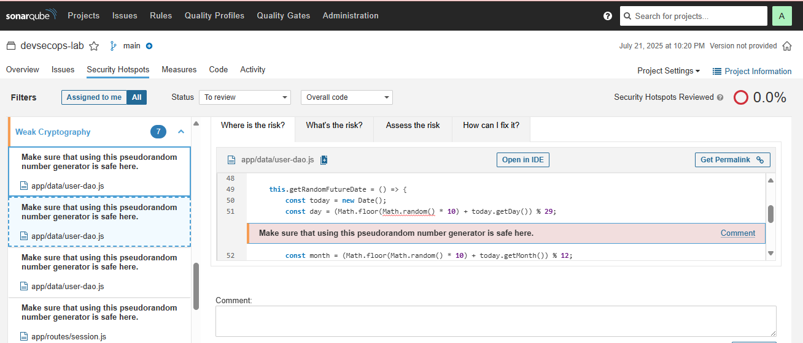

1. Qu'est-ce que SonarQube ?
SonarQube est une plateforme d’analyse statique de code open source qui inspecte la qualité du code source pour détecter automatiquement :
- les vulnérabilités de sécurité,
- les bugs,
- le code dupliqué,
- les violations de conventions (linting),
- la dette technique.
Il supporte plusieurs langages (JavaScript, Python, Java...) et peut être intégré dans le pipeline CI/CD pour alerter automatiquement les développeurs.
→ Documentation officielle SonarSource2. Concepts clés analysés par SonarQube
Les odeurs de code sont des mauvaises pratiques de programmation qui compliquent la lecture ou la maintenance du code, comme des méthodes trop longues, des noms peu explicites ou du code mort. Elles n’entraînent pas forcément des bugs mais augmentent la dette technique.
SonarQube identifie les failles de sécurité dans le code, comme les injections de commande, les données non filtrées, ou les mots de passe en dur. Ces vulnérabilités sont classées par sévérité (blocante, critique, etc.) et doivent être corrigées en priorité.
SonarQube détecte les comportements anormaux du code susceptibles de générer des erreurs à l’exécution. Par exemple, une condition toujours vraie, une mauvaise gestion des exceptions ou l’accès à une variable non initialisée.
SonarQube signale les blocs de code dupliqués dans plusieurs fichiers ou fonctions. Cela complique la maintenaxlnce et augmente le risque d’erreurs lors des mises à jour. Il est conseillé de factoriser ces blocs dans des fonctions réutilisables.
3. Exemples de vulnérabilités détectées
Authentification faible
SonarQube détecte les mots de passe codés en dur ou mal stockés dans des fichiers JS ou de config.
Code Injection (RCE)
Identification de fonctions dynamiques sensibles telles que eval() ou Function().
Regex DoS
Détection des regex vulnérables au backtracking pouvant causer des dénis de service (ReDoS).
Cryptographie faible
Usage de générateurs pseudo-aléatoires ou fonctions de hashage faibles (ex: MD5, Math.random).
